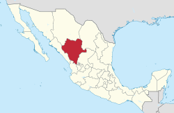
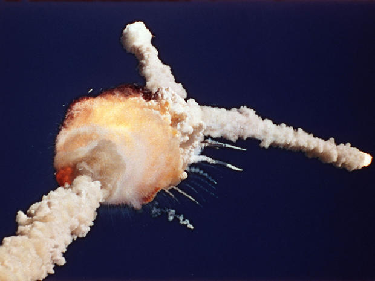

Geo: My name is Geovani Espinoza i'm fifteen years old the date is January twenty fourth 2018 i'm standing with my mother Maria Avila.
Maria: My name is Maria Avila i'm 43 years old and today's date is January twenty fourth 2018.
Geo: The first question is when and where were you born?
Maria: I was born in east La in Los Angeles California
Geo: And so were did you grow up?
Maria: I grew up in the city of lennox california
Geo: And what was your childhood like growing up in lennox?
Maria: Uh it was crazy I grew up in the 90s and that's when all the gangsters were crazy drive by shootings.
Geo: So what is your ethnic background?
Maria: Hispanic Latina
Geo: and where is yours moms family from?
Maria: They are from michigan mexico
Geo: And what about your dad's family?
Maria: There from durango mexico

Geo: And have you ever been to any of these places?
Maria: Yes only to Michigan
Geo: And what was that like?
Maria: It was nice small town visiting
Geo: What are the most important lessons in life?
Maria: The important lessons I learned is not to trust nobody and trust yourself
Geo: Why do you feel that way?
Maria: Uh because you can't really trust nobody in life it's just you and your family at the end of the day.
Geo: How is your life different that what you imagined
Maria: Um I always pictured not having a family and just traveling and now that I have my family and stay home with my children that's what I didn't picture
Geo: What is a moment in history that you personally remember and why?
Maria: I wanna say I was in the fourth grade and I remember that we were doing a project and all of a sudden we were informed that the challenger had exploded
Geo: And what is that, whats the challenger?
Maria: The Challenger was the space shuttle that exploded minutes as soon as they took off

Geo: How is were you live now different from were you were born.
Maria: Uh not much different it's still almost in the same arena, now it's just different because we have our own families and now we're grown up.
Geo: And so what was It look growing up with all your siblings?
Maria: Crowded, messy, and loud
Geo: Is there anything else you want to talk about
Maria: Uh no
Geo: Okay well thank you
Maria: You welcome
This is my scribble map that I created to show the places my mother has been. Clicking the image will open it up
This is my scribble map. Clicking this will open the image